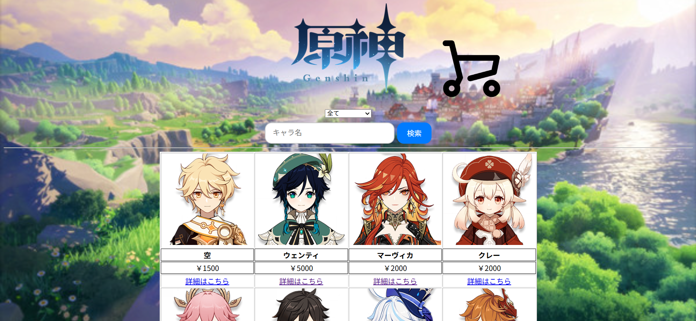
サイトの説明と作ろうと思ったきっかけ
このサイトは、私の大好きなゲーム、 原神 のそのキャラクターが売っている、架空の買い物サイトです。 もしキャラクターが直接売っていたら最高だな と思ったので、それを実現してみようと 思い、このサイトを作ることにしました。
詳細画面
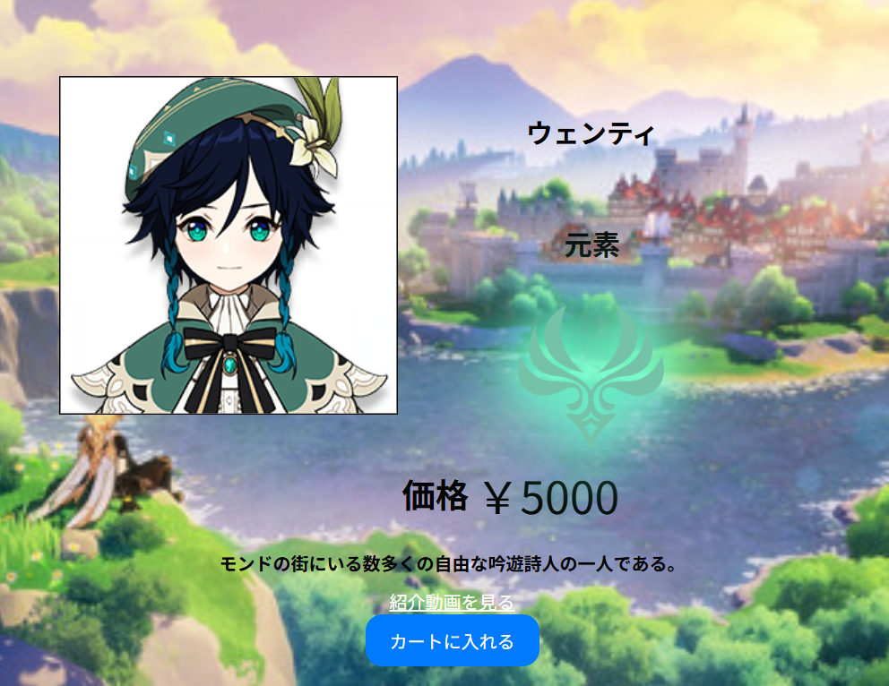
キャラの詳細画面では、名前、扱う元素（属性）とそのマーク、 価格とキャラ説明、そして そのキャラの実践の様子の動画を見ることが できるようになっています。最後に下の方にカートへ 入れるためのボタンもついています。
カート画面
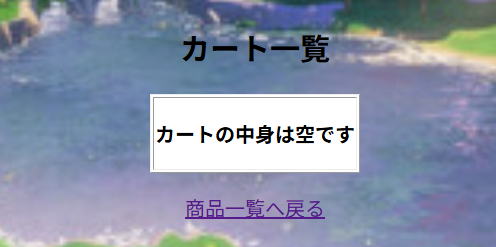
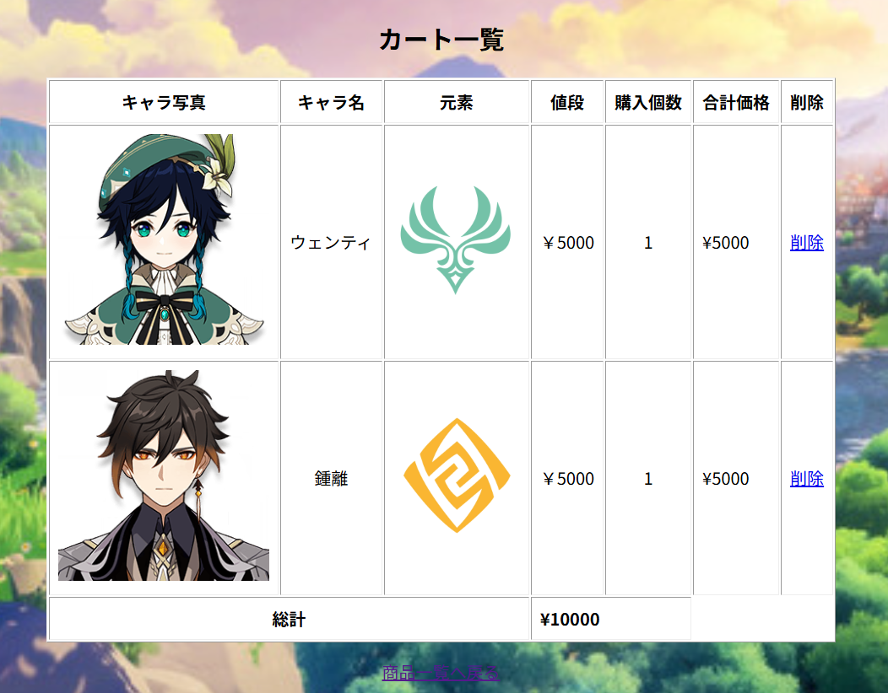
カート画面では、何もない場合は、「中身は空です」（図１参照）と表示され、 キャラをカートに入れていると（図２参照）、キャラの写真と名前、 扱う元素、 価格、購入する数が表示されます。要らない場合は削除することもできます。 尚、この買い物サイトの制作当時は、まだ簡単な サイトを作る感じだったので、 会計機能はありません。
検索機能
① 検索画面
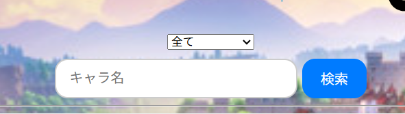
検索のところはこのように、キャラの名前をいれるテキストボックスと 所属国を選択できるセレクトボックスの二段構成になって います。
② 名前検索の場合
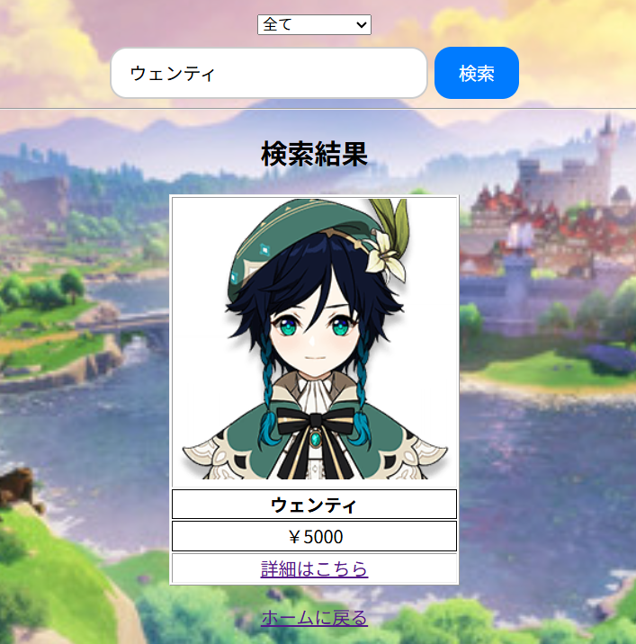
キャラ名を入れると、このように引っかかるようになっています。ちなみに、 一文字を入れると、その文字が入ってるすべてのキャラが引っかかるようになっています。
③ セレクトボックスの検索の場合
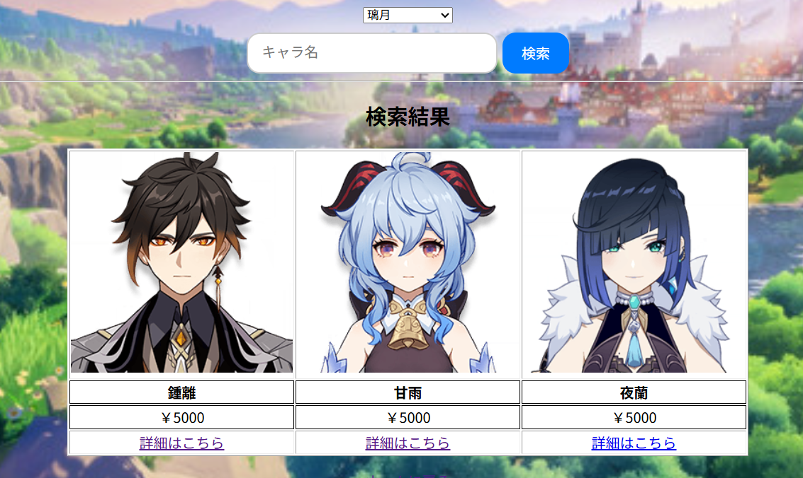
セレクトボックスには、国名（モンド、璃月、稲妻、スメール、フォンテーヌ、ナタ、ナドクライ、スネージナヤ、その他、全てがある） があり、それを選択して検索すると、その国の出身キャラがすべて引っかかります。
管理設定について
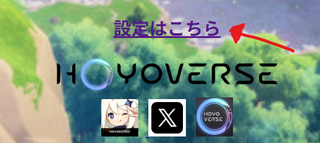
このサイトは設定から、キャラを追加及び、キャラの名前、元素、価格、所属国の更新、そして 削除することもできます。
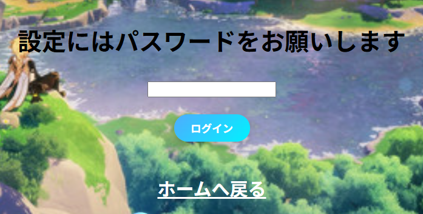
パスワードを打って、一致すると入ることができ、間違っていたら設定をすることはできません。
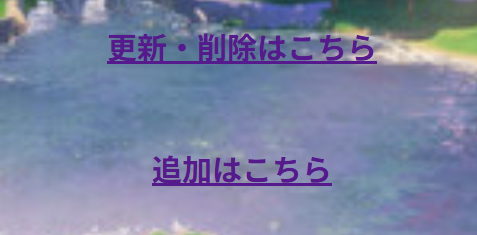
設定画面に入ることができると、更新・削除と追加があり、 更新・削除のところで、キャラのそれぞれを設定することができます。 追加のところは、ここで新しく、キャラの写真を入れて、名前、元素、出身国、価格を 設定して追加することができるようになっています。
キャラの追加について
キャラの追加画面はこのようになっており、ここで名前、 価格、説明、動画のリンクを設定し、キャラの写真を送って、 元素と出身国をセレクトボックスで設定して追加することができます。
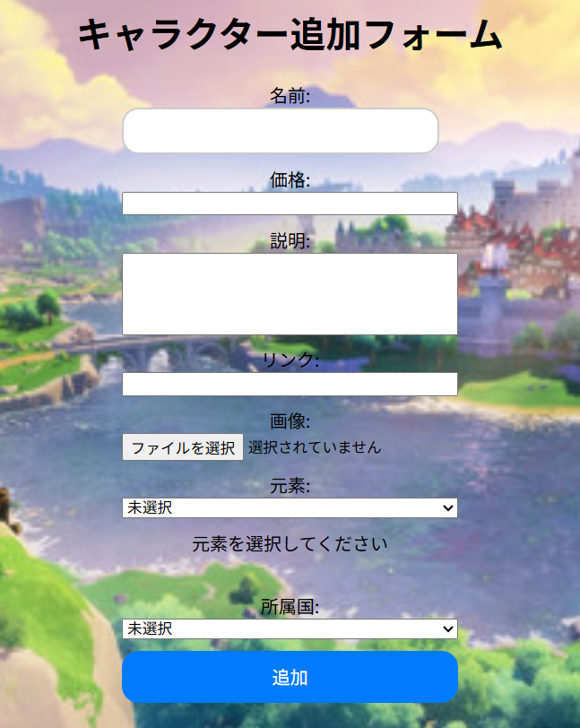
キャラクター情報の更新・削除
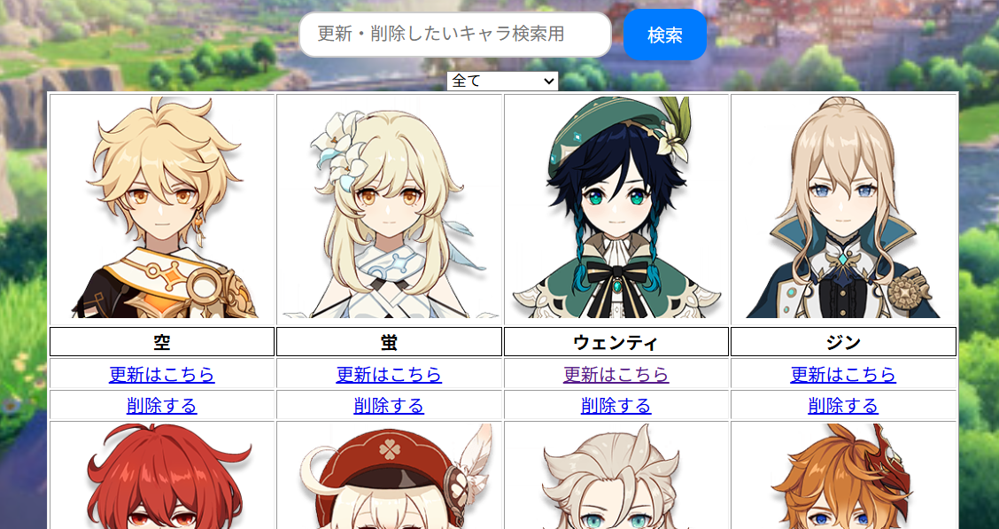
更新と削除の欄はこのようになっており、
下の削除のところからキャラごと削除することができます。
※検索欄もありますが、使い方は前述したのと同じなので省きます。
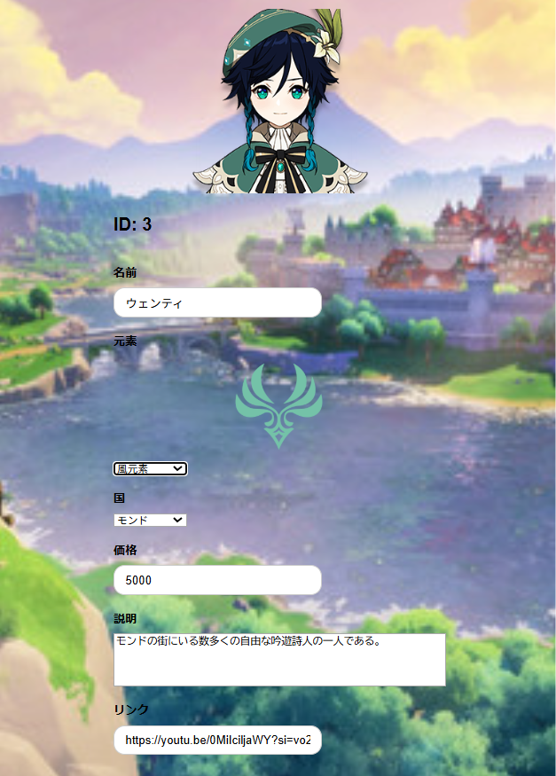
更新の画面はこちらになっています。キャラのIDが表示されており、
名前、元素、出身国、価格、説明文、動画のリンクを編集することができます。
ただし、キャラの写真を変えることはできません。